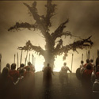

Movie Review: 300
By Dudley Storey
March 12, 2007

The great, desperate, one-sided battles of history – the Alamo, Rorke’s Drift, Iwo Jima – are quickly drawn into myth. And it is through film, that most modern of myth-making mediums, that the oldest heroic battle of all, that of a handful of Spartans against the Persian army at Thermopylae, has been turned into 300, the movie that opened this weekend.